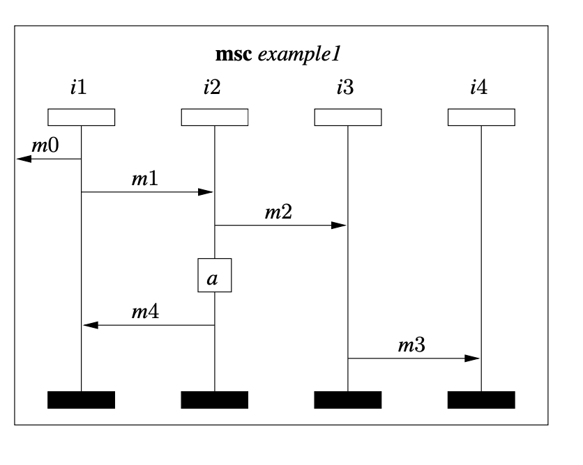
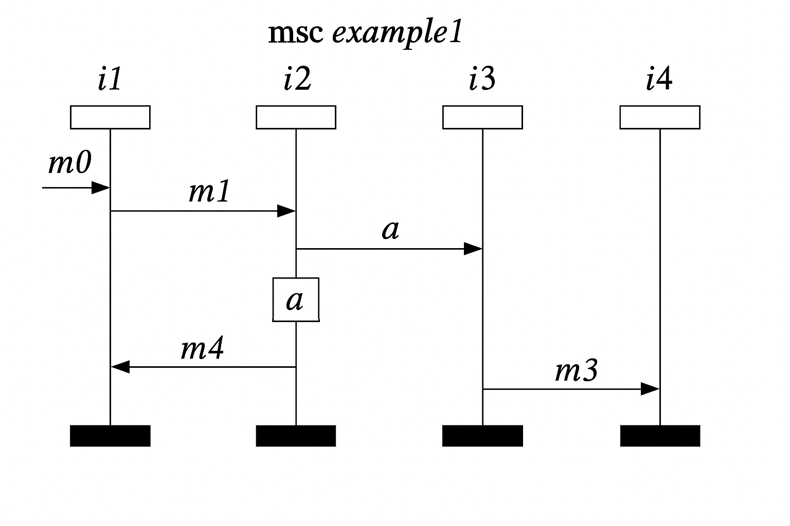
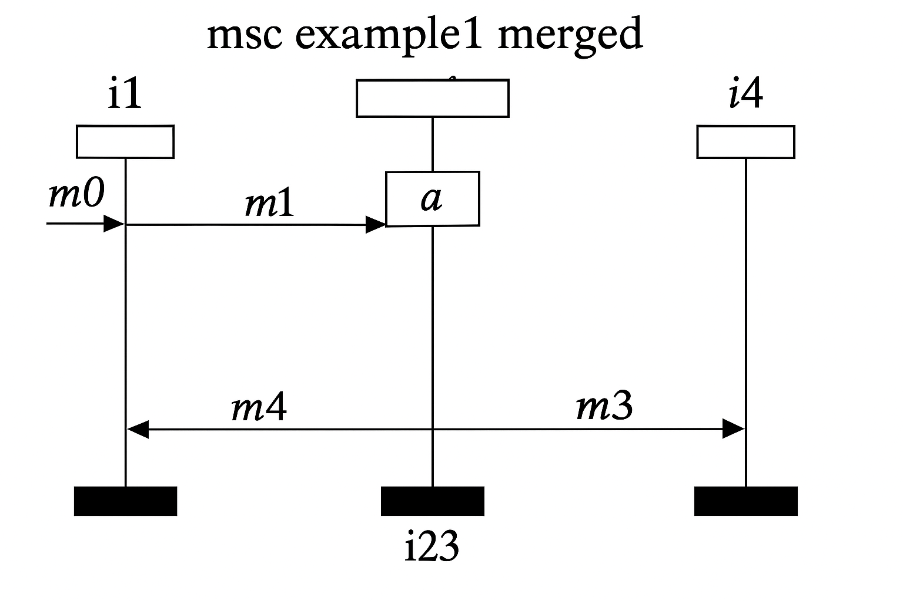
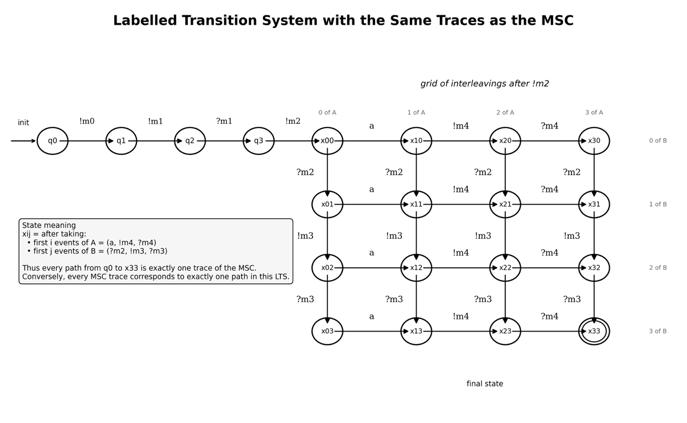

Experiments / GPT-5.4-Thinking Deep / Example 1.docx
Hi, consider this picture from a Message Sequence Chart. Identify the events in this diagram.

Sure — in this Message Sequence Chart (MSC), the events are the message send events, message receive events, and the local action a.
1) Instances (lifelines)
The diagram has four instances:
i1
i2
i3
i4
2) Events shown in the MSC
On i1
From top to bottom, the events on i1 are:
Send m0 to the outside of the chart (leftward arrow leaving i1)
Send m1 to i2
Receive m4 from i2
On i2
From top to bottom, the events on i2 are:
Receive m1 from i1
Send m2 to i3
Local action a
Send m4 to i1
On i3
From top to bottom, the events on i3 are:
Receive m2 from i2
Send m3 to i4
On i4
From top to bottom, the events on i4 are:
Receive m3 from i3
3) Event list in send/receive form
A clean way to write the events is:
s(m0) on i1
s(m1) on i1
r(m1) on i2
s(m2) on i2
r(m2) on i3
a on i2
s(m4) on i2
r(m4) on i1
s(m3) on i3
r(m3) on i4
Where:
s(...) = send event
r(...) = receive event
4) Local ordering of events on each instance
i1
Plain Text
s(m0) < s(m1) < r(m4)
Show more lines
i2
Plain Text
r(m1) < s(m2) < a < s(m4)
Show more lines
i3
Plain Text
r(m2) < s(m3)
Show more lines
i4
Plain Text
r(m
Show more lines
5) Message-causality relations
Each message also gives a send-before-receive relation:
Plain Text
s(m1) < r(m1)
s(m2) < r(m2)
s(m3) < r(m3)
s(m4) < r(m4)
``
Show more lines
For m0, only the send event is shown in the diagram, because the arrow goes outside the MSC frame.
Final answer
So the diagram contains 10 events in total:
i1: send m0
i1: send m1
i2: receive m1
i2: send m2
i3: receive m2
i2: local action a
i2: send m4
i1: receive m4
i3: send m3
i4: receive m3
If you want, I can also turn this into the partial order / Hasse diagram of events for the MSC.
Question:
What is the correct ordering between sending m1 and receiving m3?
Answer
The diagram has four instances/lifelines: i1, i2, i3, i4. The events are the send/receive events for each message, plus the local action a.
Using s(m) for “send message m” and r(m) for “receive message m”:
Events shown:
On i1:
s(m0), s(m1), r(m4)On i2:
r(m1), s(m2), local action a, s(m4)On i3:
r(m2), s(m3)On i4:
r(m3)The ordering follows two rules: events are ordered top-to-bottom on each lifeline, and every send must occur before its corresponding receive.
So between sending m1 and receiving m3, the ordering is:
send m1 → receive m1 → send m2 → receive m2 → send m3 → receive m3
Therefore, sending m1 definitely occurs before receiving m3.
Question:
Based on the diagram above, generate a message sequence chart in which message m2 is abstracted away.
One possible abstracted MSC
i1 i2 i3 i4
| | | |
|---- m0 ---> | | | (to environment)
| | | |
|---- m1 ---->| | |
| | | |
| | [ a ] | |
|<--- m4 -----| | |
| | |---- m3 ---->|
| | | |
``
More precise structural view
A cleaner event-oriented description is:
i1: s(m0) < s(m1) < r(m4)
i2: r(m1) < a < s(m4)
i3: s(m3)
i4: r(m3)
``
with the message matching relation:
s(m1) < r(m1)
s(m4) < r(m4)
s(m3) < r(m3)
``
Important semantic note
There is one subtle point:
In the original MSC, m2 created a causal dependency from i2 to i3:
r(m1) < s(m2) < r(m2) < s(m3)
``
So originally, m3 could only happen after the m2 interaction chain.
Once m2 is hidden/removed, that dependency is no longer explicitly visible in a basic MSC.
So the abstracted chart above is the natural syntactic abstraction, but it also forgets the visible causal link between i2 and i3.
Final abstracted MSC (compact form)
Messages kept: m0, m1, m3, m4
Local action kept: a
Message removed: m2
``
If you'd like, I can also draw the abstracted MSC as a proper diagram image or give it in a formal MSC notation.
Please produce an image in a formal MSC notation.

Question:
What is the order between receiving m1 and sending m3 in the resulting MSC in which m2 is abstracted away.
In the resulting basic MSC where m2 is simply abstracted away / removed from the diagram, there is no ordering relation between:
r(m1) = receiving m1 on i2
s(m3) = sending m3 on i3
Answer
Plain Text
r(m1) and s(m3) are unordered in the abstracted MSC.
``
Show more lines
Equivalently:
Plain Text
Neither r(m1) < s(m3) nor s(m3) < r(m1)
``
Show more lines
Why?
In an MSC, ordering comes from:
the vertical order on the same instance, and
message causality (send before receive of the same message).
After removing m2:
r(m1) is on instance i2
s(m3) is on instance i3
These are on different instances, and after deleting m2 there is no remaining message connecting i2 and i3.
So the visible chart does not force either event to happen before the other.
Important subtlety
In the original MSC, there was an indirect dependency:
Plain Text
r(m1) < s(m2) < r(m2) < s(m3)
``
Show more lines
So originally, you could conclude:
Plain Text
r(m1) < s(m3)
``
Show more lines
But once m2 is abstracted away in the resulting basic MSC, that causal chain is no longer visible. Therefore the abstracted chart itself says only that they are concurrent / unordered.
Final statement
If the abstraction is interpreted as simple deletion of message m2, then:
Plain Text
r(m1) || s(m3)
``
Show more lines
meaning receiving m1 and sending m3 are unordered in the resulting MSC.
If you want, I can also give the full partial order of the abstracted MSC in formal notation.
Consider the original MSC given below. Merge instance i2 and i3; produce the message sequence chart after merging.
Certainly. After merging instances i2 and i3 into a single instance (call it i23), the messages incident to either i2 or i3 are now attached to i23.
Key effect of the merge
i1, i2, i3, i4
becomes
i1, i23, i4The message m2, which originally went from i2 to i3, becomes an internal communication on the merged instance i23.
In a formal MSC drawing, this is typically shown as a self-message on i23.The local action a remains on the merged instance i23.
Messages m1, m3, and m4 are redirected accordingly:
m1: i1 -> i23
m4: i23 -> i1
m3: i23 -> i4
Important subtlety: the merged MSC is not unique
In the original MSC:
a is on i2
r(m2) is on i3
and there is no order between a and r(m2) in the original partial order.
So after merging i2 and i3 into one lifeline, you must choose some linearization of the events on the new instance i23.
That means there are multiple valid merged MSCs.
One valid merged MSC
A perfectly valid result is the following ordering on i23:
r(m1) < s(m2) < r(m2) < a < s(m4) < s(m3)
with the additional message relations:
s(m1) < r(m1)
s(m2) < r(m2)
s(m4) < r(m4)
s(m3) < r(m3)
Formal MSC-style sketch
msc example1_merged;
inst i1, i23, i4;
i1 -> ENV : m0
i1 -> i23 : m1
i23 -> i23 : m2
i23 : a
i23 -> i1 : m4
i23 -> i4 : m3
ASCII MSC picture
i1 i23 i4
| | |
|---- m0 -------> | | (to environment / outside chart)
| | |
|----- m1 -------> | |
| | |
| |--- m2 -------> |
| |<-- m2 -------- | (self-message on i23)
| | |
| | [ a ] |
| | |
|<----- m4 ------- | |
| | |
| |------ m3 ------> |
| | |
What changed structurally?
Before merging
m2 connected two different instances: i2 -> i3
After merging
m2 becomes internal to the merged instance
the chart now has only three lifelines:
i1
i23
i4
Final answer
A correct merged MSC is:
instances: i1, i23, i4
messages/actions:
m0 from i1 to the environment
m1 from i1 to i23
m2 as a self-message on i23
local action a on i23
m4 from i23 to i1
m3 from i23 to i4
with one valid ordering on i23 being:
r(m1) < s(m2) < r(m2) < a < s(m4) < s(m3)
If you want, I can also draw this as a proper MSC image in the same style as the original figure.
Please draw this as a proper MSC image.

Consider the original MSC given below. Please produce the set of all of its traces.
Certainly. For the original MSC, the set of traces is the set of all linearizations (topological sorts) of its event partial order.
1) Events of the MSC
I will use the standard notation:
!m = send of message m
?m = receive of message m
a = local action a
So the events are:
!m0, !m1, ?m1, !m2, ?m2, !m3, ?m3, a, !m4, ?m4
``
2) Ordering constraints from the MSC
Per instance
From the lifelines:
On i1:
!m0 < !m1 < ?m4
``
On i2:
?m1 < !m2 < a < !m4
``
On i3: ?m2 < !m3
On i4: ?m3
From message causality
Each send precedes the corresponding receive:
!m1 < ?m1
!m2 < ?m2
!m3 < ?m3
!m4 < ?m4
``
3) Useful simplification
From these constraints, the beginning of every trace is fixed:
!m0 < !m1 < ?m1 < !m2
``
After !m2, the remaining events split into two chains that may interleave:
Chain A: a < !m4 < ?m4
Chain B:
?m2 < !m3 < ?m3
``
So the trace set is:
Tr(MSC) = { !m0 · !m1 · ?m1 · !m2 · w | w ∈ shuffle( a·!m4·?m4 , ?m2·!m3·?m3 ) }
``
Since this is the shuffle of two length-3 chains, there are
(6 choose 3) = 20
``
traces.
4) The complete set of all traces
Thus the MSC has exactly the following 20 traces:
1. !m0 !m1 ?m1 !m2 a ?m2 !m3 ?m3 !m4 ?m4
2. !m0 !m1 ?m1 !m2 a ?m2 !m3 !m4 ?m3 ?m4
3. !m0 !m1 ?m1 !m2 a ?m2 !m3 !m4 ?m4 ?m3
4. !m0 !m1 ?m1 !m2 a ?m2 !m4 ?m4 !m3 ?m3
5. !m0 !m1 ?m1 !m2 a ?m2 !m4 !m3 ?m3 ?m4
6. !m0 !m1 ?m1 !m2 a ?m2 !m4 !m3 ?m4 ?m3
7. !m0 !m1 ?m1 !m2 a !m4 ?m2 ?m4 !m3 ?m3
8. !m0 !m1 ?m1 !m2 a !m4 ?m2 !m3 ?m3 ?m4
9. !m0 !m1 ?m1 !m2 a !m4 ?m2 !m3 ?m4 ?m3
10. !m0 !m1 ?m1 !m2 a !m4 ?m4 ?m2 !m3 ?m3
11. !m0 !m1 ?m1 !m2 ?m2 a !m3 ?m3 !m4 ?m4
12. !m0 !m1 ?m1 !m2 ?m2 a !m3 !m4 ?m3 ?m4
13. !m0 !m1 ?m1 !m2 ?m2 a !m3 !m4 ?m4 ?m3
14. !m0 !m1 ?m1 !m2 ?m2 a !m4 ?m4 !m3 ?m3
15. !m0 !m1 ?m1 !m2 ?m2 a !m4 !m3 ?m3 ?m4
16. !m0 !m1 ?m1 !m2 ?m2 a !m4 !m3 ?m4 ?m3
17. !m0 !m1 ?m1 !m2 ?m2 !m3 a ?m3 !m4 ?m4
18. !m0 !m1 ?m1 !m2 ?m2 !m3 a !m4 ?m3 ?m4
19. !m0 !m1 ?m1 !m2 ?m2 !m3 a !m4 ?m4 ?m3
20. !m0 !m1 ?m1 !m2 ?m2 !m3 ?m3 a !m4 ?m4
``
5) Compact characterization
A very compact way to present the same answer is:
Tr(MSC) =
!m0 · !m1 · ?m1 · !m2 · (a · !m4 · ?m4 ⧢ ?m2
where ⧢ denotes shuffle/interleaving preserving the order inside each component sequence.
If you want, I can also produce:
the partial order / Hasse diagram of the events, or
the same trace set using event names like s(m1), r(m1), ... instead of !m1, ?m1.
Please draw a labelled transition system that has the same traces as the MSC. Please produce one static picture, no interactive visualisation.
Absolutely — here is a static labelled transition system (LTS) whose complete paths have exactly the same traces as the original MSC:

How to read it
The left-hand prefix q0 --!m0--> q1 --!m1--> q2 --?m1--> q3 --!m2--> x00 captures the part of the MSC that is totally ordered.
After !m2, the remaining behaviour is the interleaving of two chains:
A = (a,,!m4,,?m4)
B = (?m2,,!m3,,?m3)
Each state xij means:
i events have been taken from chain A,
j events have been taken from chain B.
So every path from the initial state to the final state x33 corresponds to exactly one trace of the MSC, and every MSC trace appears as one such path.
If you want, I can also produce:
a smaller quotient LTS (if you want a more compact automaton), or
the same LTS in TikZ, Graphviz/DOT, or LaTeX form.